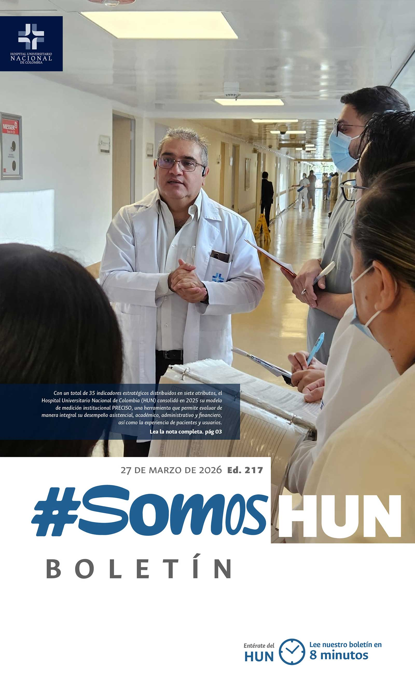
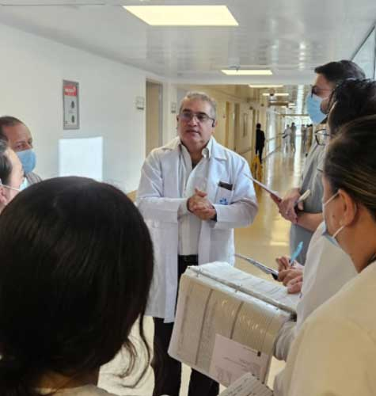
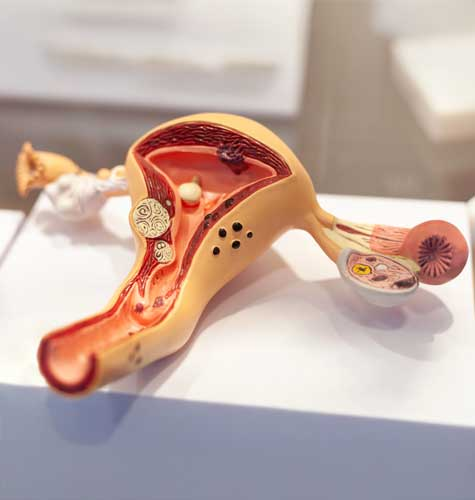
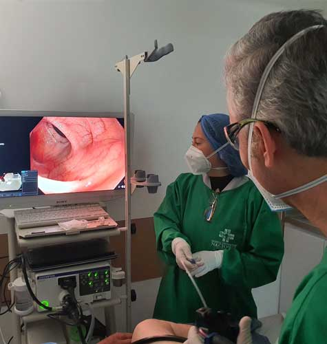
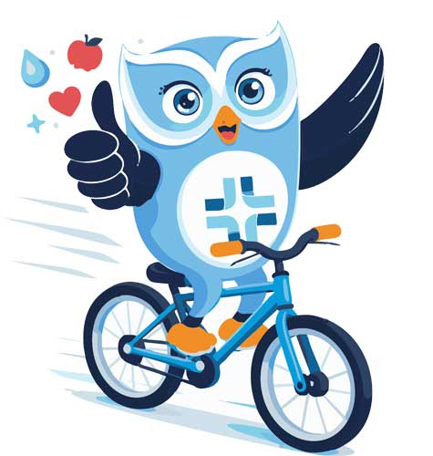
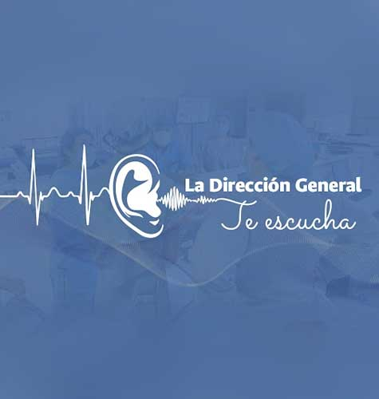

Ver todos los boletines
El HUN consolida su modelo PRECISO
Con un total de 35 indicadores estratégicos distribuidos en siete atributos, el Hospital Universitario Nacional de Colombia (HUN) consolidó en 2025 su modelo de medición institucional PRECISO, una herramienta que permite evaluar de manera integral su desempeño asistencial, académico, administrativo y financiero, así como la experiencia de pacientes y usuarios.Leer más

Todo un desafío, prevenir el cáncer de cuello uterino en colombia
Aunque es uno de los cánceres más prevenibles, el de cuello uterino continúa siendo un desafío de salud pública. En Colombia, afecta a cerca de 3.800 mujeres cada año y sigue siendo la primera causa de muerte por cáncer entre mujeres de 30 a 59 años. En el marco del Día Mundial de la Prevención del Cáncer de Cuello Uterino, especialistas insisten en que la vacunación contra el virus del papiloma humano (VPH), el tamizaje y la consulta oportuna siguen siendo las principales herramientas para reducir su impacto.Leer más

El cáncer de colon avanza y la detección temprana marca la diferencia
Sin hacer ruido en sus primeras etapas y sin señales claras que alerten a quienes lo padecen, el cáncer de colon se ha convertido en una de las principales preocupaciones en salud pública. En Colombia, ya supera los 51.000 casos prevalentes y registra más de 4.200 nuevos diagnósticos cada año, cifras que reflejan no solo su impacto, sino también la necesidad de fortalecer la prevención y la detección temprana.Leer más

El uso de guaya o sistema de seguridad para bicicletas, es responsabilidad del propietario.
Asegura tu bicicleta. Prevenir el hurto empieza por ti. Cuida tu casa HUNLeer más

La Dirección General te escucha
A través de este podcast la Dirección General, invita a toda la organización a abrir una conversación necesaria: liderar no es solo cumplir tareas, es generar impacto, tomar decisiones con sentido y aportar valor real al propósito institucional.Leer más